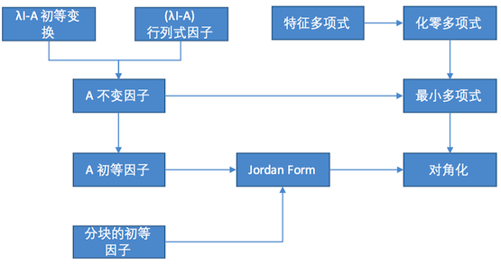

Bird's-eye view

1. 推广得到 lambda matrix
初等变换:
- 对调行/列
- 数乘
- 某列/行乘一个 lambda 多项式再加到另一行/列
任意 lambda 矩阵相抵与对角 Smith 标准形
- 一定可以将左上角降次:
- 第一行有不能整除的
- 第一列有不能整除的
- 右下方有不能整除的
标准型中各项为不变因子
行列式因子
各阶子式(行列式)中最大公因式
相抵保持秩和行列式因子不变
证明：三种初等变换不改变行列式因子
不变因子与行列式因子的关系：
D1(λ)Dn(λ)=d1(λ)=Dn−1(λ)dn(λ)
导出 Smith 结论
Smith 标准型唯一:
- A 与 Smith 相抵 => A 与 Smith 相同 行列式因子
- A 固定 => 行列式因子唯一
- Smith 行列式因子 可导出不变因子 => Smith 不变因子唯一
- 故 Smith 唯一
初等因子
A 与 B 相抵 => 相同 Smith 标准形 <=> 相同的不变因子、行列式因子
=> 相同初等因子、秩
相同初等因子、秩、阶数 => Smith 标准形
分块矩阵的初等因子 <= 各块初等因子放在一起
相似的矩阵，特征矩阵相抵
引理:
A(λ)=Q(λ)B(λ)+R(λ)
即一个矩阵可分解为 低次矩阵之积 + 低次矩阵(余数)
可得到:
A∼B⇔λI−A≃λI−B
对 Jordan Block，易求得初等因子：
(λ−Ji)ni
整个 Jordan Normal Form 的初等因子是各个 block 合起来
故 找到
λI−A
的初等因子
=> 构造出对应 J ~ A
=> 所有矩阵都相似于某个 J
如果 A 可以对角化，则初等因子全为1次式，极端情况的 Jordan Normal Form
若
A=PJP−1⇒AP=PJ
把 P 按列写开则利用J，可得到关于各个列的方程
A(p1,p2,p3)=(p1,p2,p3)J
3. 最小多项式理论
矩阵的多项式
多项式形如
f(λ)=a0λm+...+am−1λ+am
如果带入 A 得到 A
矩阵的多项式 f(A)
矩阵的特征多项式:
f(λ)=|λI−A|=λn+...+a0
=> 可以得到 f(A) = 0
（利用
λI−A
的伴随矩阵，构造式证明）
化零多项式
定义化零多项式: 使 f(A) = 0 的 f(x)
=> 显然特征多项式就是一个化零
所有化零多项式中，分解因式得到的最大公因式，定义为矩阵的最小多项式 m(x)
那么 m(x) 可整除任意化零、特征多项式
最小多项式等于 特征矩阵的最后一个不变因子 d_n(lambda)
证明略
但可以利用最小多项式降次